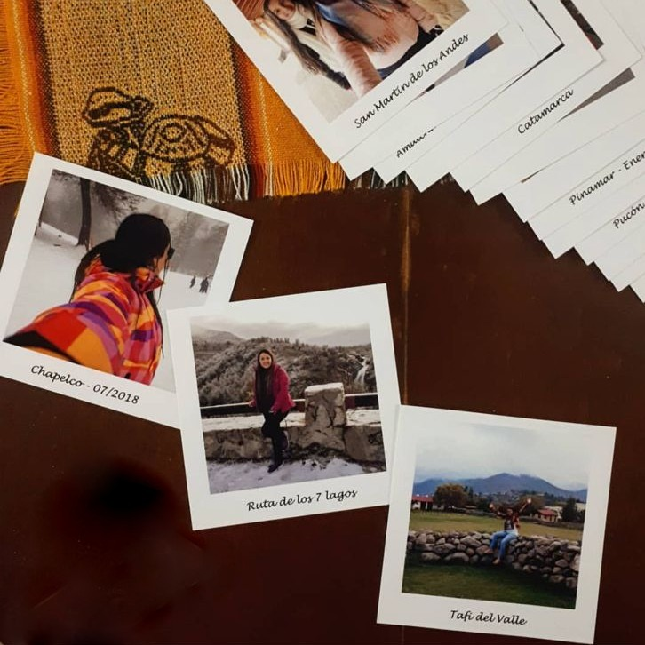
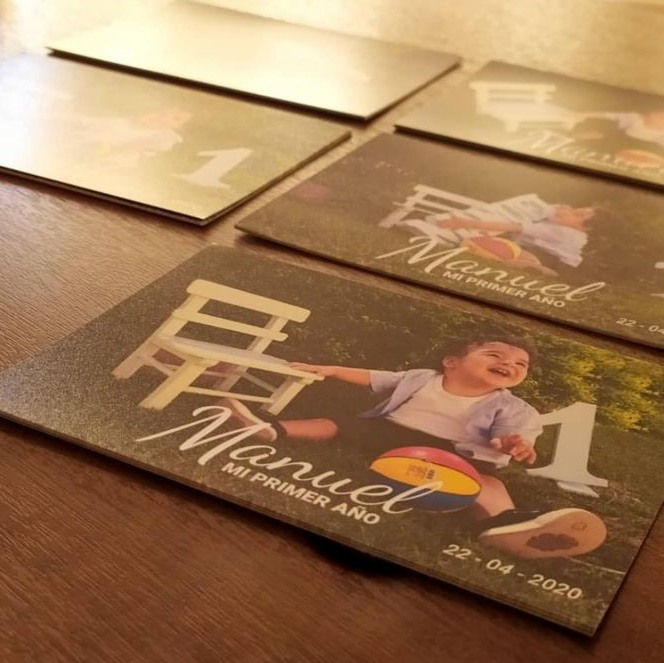

Fotografía
A lo largo del tiempo, la fotografía ha tomado distintos roles dentro de la sociedad, pero en todo momento se mantuvo la tradición de atesorar las imágenes como recuerdos familiares, eventuales, históricos, etc. Actualmente nos enfocamos en la fotografía como arte, pero nuestros clientes siguen guardando sus recuerdos en papel. Por eso te ofrecemos distintas posibilidades para conservar tus imagenes en la mejor calidad posible y asesoramiento sobre como conservarlas de la mejor manera para expandir la vida de tus recuerdos sin perder detalles. A continuación te presentamos dos tipos de revelado que llevamos a cabo para que puedas ver cual se adapta mejor a tus necesidades.
FOTOS POLAROID
Las polaroid son fotografias de estilo "instantánea" que conservan los bordes de dicho estilo para aparentar como si fuesen tomadas en el momento. Su particularidad es que acompaña muy bien cuanto llega la hora de hacer un presente o, si preferís hacer un mural de momentos, te van a ayudar mucho para traerlos a la realidad.
FOTOS TRADICIONALES
Por su parte, las fotografías tradicionales son las clásicas que hace años atrás se hacían revelar a traves de un rollo de negtivos y en Loyd te traemos la posibilidad de imprimir tus imágenes digitales (tomadas con cualquier dispositivo) en papel conservando todos los detalles y procurando su máxima durabilidad en el tiempo.
